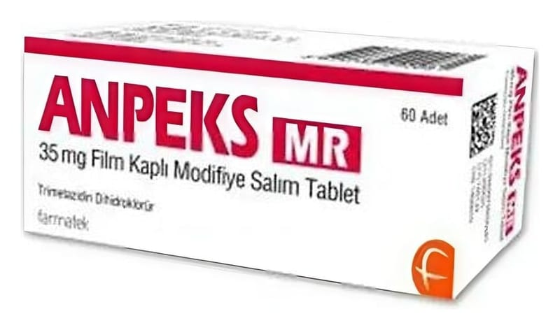

Anpeks MR 35 mg Film Kaplı Modifiye Salım Tablet, 60 Adet

Ne için kullanılır
KT · Bölüm 1 Pembe renkli, yuvarlak, bikonveks (ikiyüzlü dış bükey), film kaplı tablet ANPEKS MR 35 mg film kaplı modifiye salım tablet, 60 tabletten oluşan blister ambalajda bulunmaktadır. ANPEKS MR hücresel anti-iskemik grubuna aittir.
ANPEKS MR, yetişkin hastalarda anjina pektoris (koroner hastalığının sebep olduğu göğüs ağrısı) tedavisinde diğer ilaçlarla birlikte kullanılmaktadır. Hayvan kaynaklı laktoz monohidrat (sığır kaynaklı) içerir.